7210B35 REAR OUTER WHEEL ARCH
- Path
- Procedures > 72 PANELS AND FRAME > 7210 REMOVING REFITTING > 7210B STRUCTURE ELEMENTS-CENTRAL AND REAR PART > 7210B35 REAR OUTER WHEEL ARCH
- Kind
- repair procedure (removal / refitting; the operation number is the code)
- Applies to
- all engines; all production periods
- Interactive page
- https://sloeber94.github.io/elrnDB-fUlss/en/#/179007960
Applies to: all engines; all production periods
Applies to: all engines; all production periods
 Removing
Removing
 Refitting
Refitting- Work on the component highlighted making sure previously that the equipment illustrated below is available.
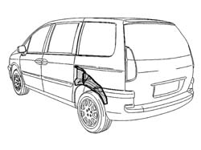
Applies to: all engines; all production periods
1. Left rear wheel passage, top section
2. Left rear wing box section
3. Left rear wheel passage.
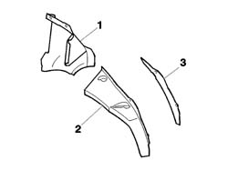
Applies to: all engines; all production periods
- Check that the components connected are not distorted by checking the bodyshell alignment measurements using suitable equipment (gauges, templates or jigs).
- Reduce the spot welds illustrated using a chamfering machine.
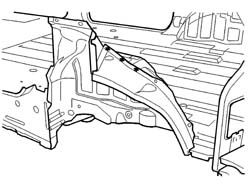
Applies to: all engines; all production periods
- Reduce the spot welds illustrated using a chamfering machine.
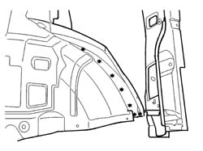
Applies to: all engines; all production periods
- Reduce the spot welds illustrated using a chamfering machine.
- Dismantle the rear wing box section and rear wheel passage, upper section, assembly.
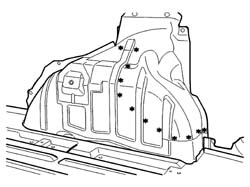
Applies to: all engines; all production periods
- Remove the residues from the bodyshell using a disc grinder and apply electro-galvanizing paint.
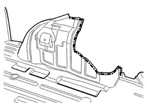
Applies to: all engines; all production periods
- Prepare the edges for welding and protect them using thermoweldable primer.
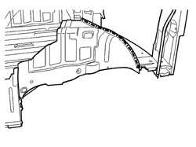
Applies to: all engines; all production periods
Refitting
Removing- Position the rear foot, the wheel passage upper section, the wing lining and the wing box section extension and fasten using self-locking clamps then, after having checked that the alignment is correct, remove the rear pillar and follow the instructions given below.
- Carry out the welding illustrated in the diagram using a spot welder.
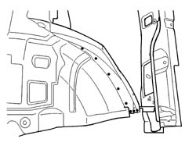
Applies to: all engines; all production periods
- Carry out the welding illustrated in the diagram using a spot welder.
Applies to: all engines; all production periods
- Carry out the welding illustrated in the diagram using a spot welder.
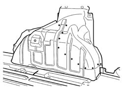
Applies to: all engines; all production periods
- Apply sealing compound along the lines illustrated in the diagram.
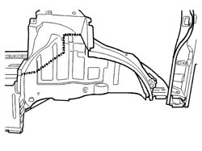
Applies to: all engines; all production periods
- Apply sealing compound along the lines illustrated in the diagram.
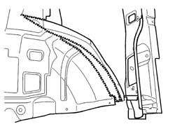
Applies to: all engines; all production periods
- Apply electro-galvanizing paint to the ground parts.
- Proceed with waxing the box sections.